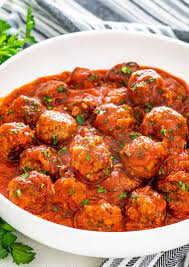

Meatballs Recipe

Meatballs are the sweetest and nice combi of food.It is a very easy and fast recipe one could like to cook anytime they want to.
Ingridients
Minced meat
Onions
Cooking Oil
Tomato paste
Tomatoes
Corriander
Salt
Steps
- Put the minced meat on the cooking pan and leave it to cook for some time.
- Put some chopped onions.
- Put little cooking oil for theonions to cook until brown.
- Put a spoonfull of tomato paste.
- Put some chooped tomatoes
- Add corriander
- Add some salt to bring it to taste. leave it to simmer for sometime.
- Serve it while hot